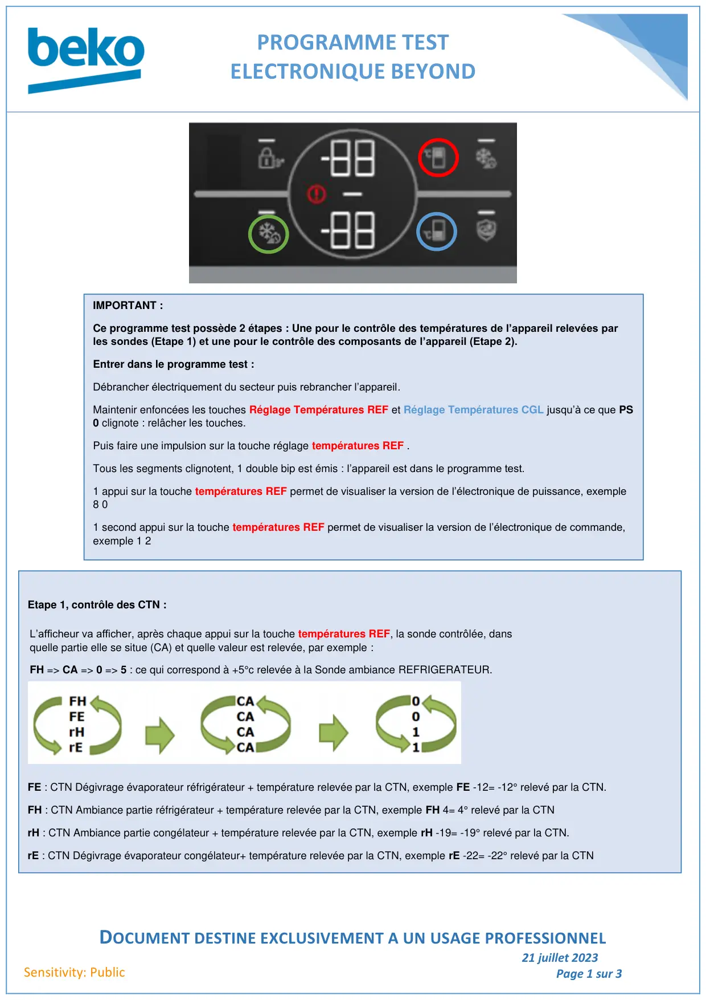
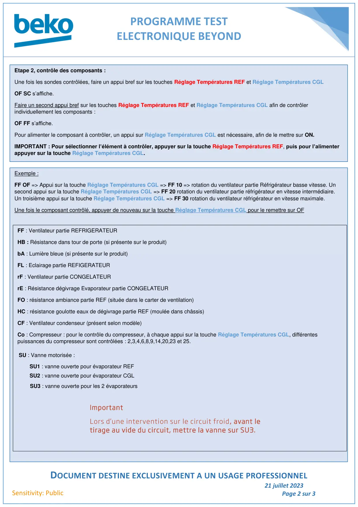
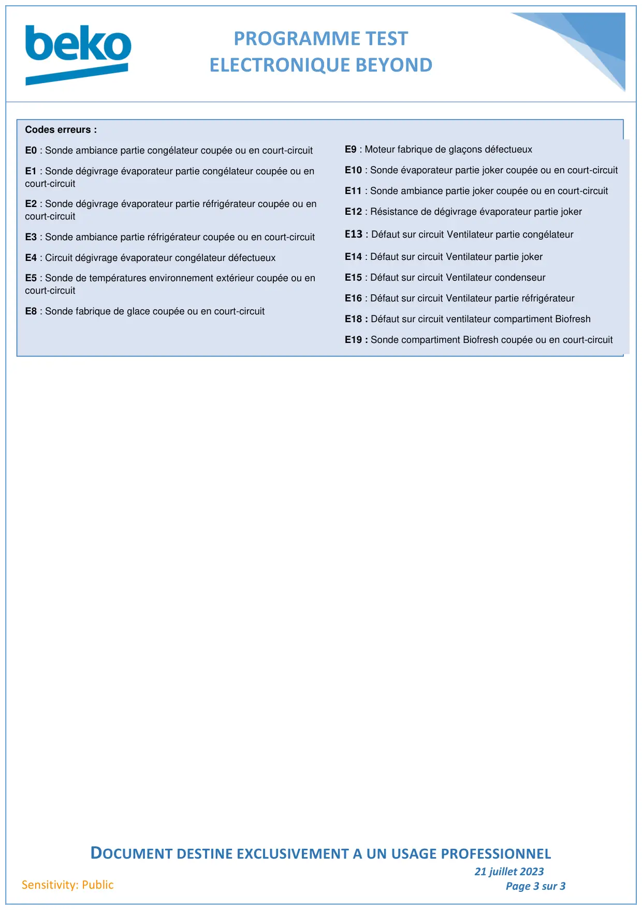

Prog Test Froid Electronique Beyond

PROGRAMME TESTELECTRONIQUE BEYONDDOCUMENT DESTINE EXCLUSIVEMENT A UN USAGE PROFESSIONNEL21 juillet 2023Page 1 sur 3Sensitivity: PublicIMPORTANT :Ce programme test possède 2 étapes : Une pour le contrôle des températures de l’appareil relevées parles sondes (Etape 1) et une pour le contrôle des composants de l’appareil (Etape 2).Entrer dans le programme test :Débrancher électriquement du secteur puis rebrancher l’appareil.Maintenir enfoncées les touches Réglage Températures REF et Réglage Températures CGL jusqu’à ce que PS0 clignote : relâcher les touches.Puis faire une impulsion sur la touche réglage températures REF .Tous les segments clignotent, 1 double bip est émis : l’appareil est dans le programme test.1 appui sur la touche températures REF permet de visualiser la version de l’électronique de puissance, exemple8 01 second appui sur la touche températures REF permet de visualiser la version de l’électronique de commande,exemple 1 2Etape 1, contrôle des CTN :FE : CTN Dégivrage évaporateur réfrigérateur + température relevée par la CTN, exemple FE -12= -12° relevé par la CTN.FH : CTN Ambiance partie réfrigérateur + température relevée par la CTN, exemple FH 4= 4° relevé par la CTNrH : CTN Ambiance partie congélateur + température relevée par la CTN, exemple rH -19= -19° relevé par la CTN.rE : CTN Dégivrage évaporateur congélateur+ température relevée par la CTN, exemple rE -22= -22° relevé par la CTNL’afficheur va afficher, après chaque appui sur la touche températures REF, la sonde contrôlée, dansquelle partie elle se situe (CA) et quelle valeur est relevée, par exemple :FH => CA => 0 => 5 : ce qui correspond à +5°c relevée à la Sonde ambiance REFRIGERATEUR.
1 / 3
PROGRAMME TESTELECTRONIQUE BEYONDDOCUMENT DESTINE EXCLUSIVEMENT A UN USAGE PROFESSIONNEL21 juillet 2023Page 2 sur 3Sensitivity: PublicEtape 2, contrôle des composants :Une fois les sondes contrôlées, faire un appui bref sur les touches Réglage Températures REF et Réglage Températures CGLOF SC s’affiche.Faire un second appui bref sur les touches Réglage Températures REF et Réglage Températures CGL afin de contrôlerindividuellement les composants :OF FF s’affiche.Pour alimenter le composant à contrôler, un appui sur Réglage Températures CGL est nécessaire, afin de le mettre sur ON.IMPORTANT : Pour sélectionner l’élément à contrôler, appuyer sur la touche Réglage Températures REF, puis pour l’alimenterappuyer sur la touche Réglage Températures CGL.Exemple :FF OF => Appui sur la touche Réglage Températures CGL => FF 10 => rotation du ventilateur partie Réfrigérateur basse vitesse. Unsecond appui sur la touche Réglage Températures CGL => FF 20 rotation du ventilateur partie réfrigérateur en vitesse intermédiaire.Un troisième appui sur la touche Réglage Températures CGL => FF 30 rotation du ventilateur réfrigérateur en vitesse maximale.Une fois le composant contrôlé, appuyer de nouveau sur la touche Réglage Températures CGL pour le remettre sur OFFF : Ventilateur partie REFRIGERATEURHB : Résistance dans tour de porte (si présente sur le produit)bA : Lumière bleue (si présente sur le produit)FL : Eclairage partie REFIGERATEURrF : Ventilateur partie CONGELATEURrE : Résistance dégivrage Evaporateur partie CONGELATEURFO : résistance ambiance partie REF (située dans le carter de ventilation)HC : résistance goulotte eaux de dégivrage partie REF (moulée dans châssis)CF : Ventilateur condenseur (présent selon modèle)Co : Compresseur : pour le contrôle du compresseur, à chaque appui sur la touche Réglage Températures CGL, différentespuissances du compresseur sont contrôlées : 2,3,4,6,8,9,14,20,23 et 25.ImportantLors d’une intervention sur le circuit froid, avant letirage au vide du circuit, mettre la vanne sur SU3.SU : Vanne motorisée :SU1 : vanne ouverte pour évaporateur REFSU2 : vanne ouverte pour évaporateur CGLSU3 : vanne ouverte pour les 2 évaporateurs
2 / 3
PROGRAMME TESTELECTRONIQUE BEYONDDOCUMENT DESTINE EXCLUSIVEMENT A UN USAGE PROFESSIONNEL21 juillet 2023Page 3 sur 3Sensitivity: PublicCodes erreurs :E0 : Sonde ambiance partie congélateur coupée ou en court-circuitE1 : Sonde dégivrage évaporateur partie congélateur coupée ou encourt-circuitE2 : Sonde dégivrage évaporateur partie réfrigérateur coupée ou encourt-circuitE3 : Sonde ambiance partie réfrigérateur coupée ou en court-circuitE4 : Circuit dégivrage évaporateur congélateur défectueuxE5 : Sonde de températures environnement extérieur coupée ou encourt-circuitE8 : Sonde fabrique de glace coupée ou en court-circuitE9 : Moteur fabrique de glaçons défectueuxE10 : Sonde évaporateur partie joker coupée ou en court-circuitE11 : Sonde ambiance partie joker coupée ou en court-circuitE12 : Résistance de dégivrage évaporateur partie jokerE13 : Défaut sur circuit Ventilateur partie congélateurE14 : Défaut sur circuit Ventilateur partie jokerE15 : Défaut sur circuit Ventilateur condenseurE16 : Défaut sur circuit Ventilateur partie réfrigérateurE18 : Défaut sur circuit ventilateur compartiment BiofreshE19 : Sonde compartiment Biofresh coupée ou en court-circuit
3 / 3